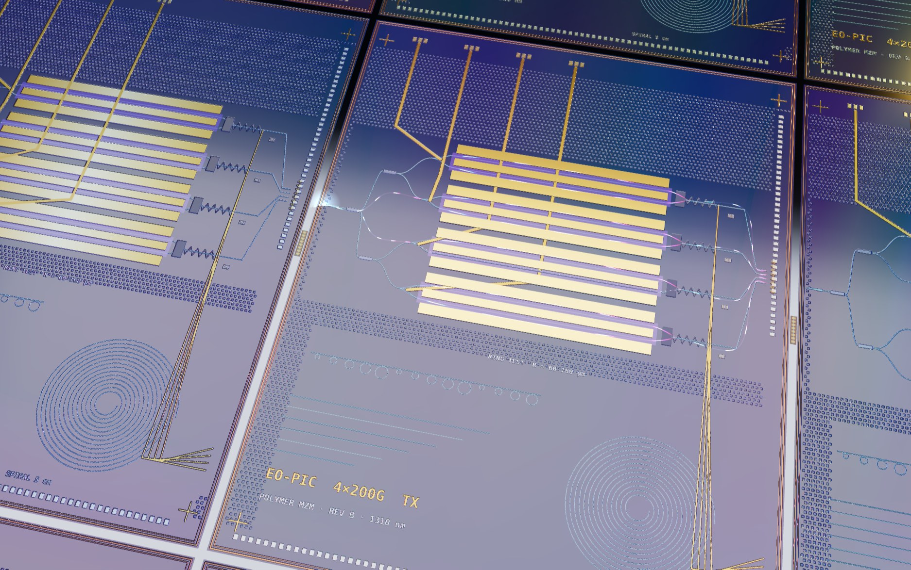
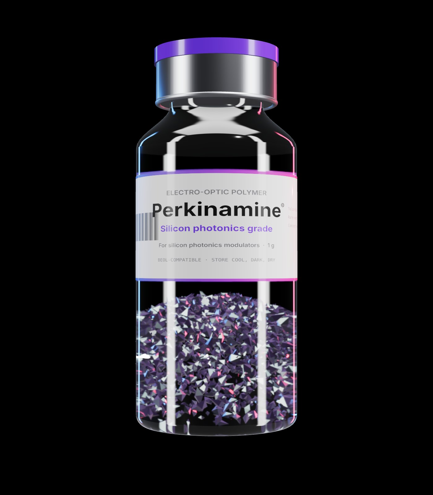
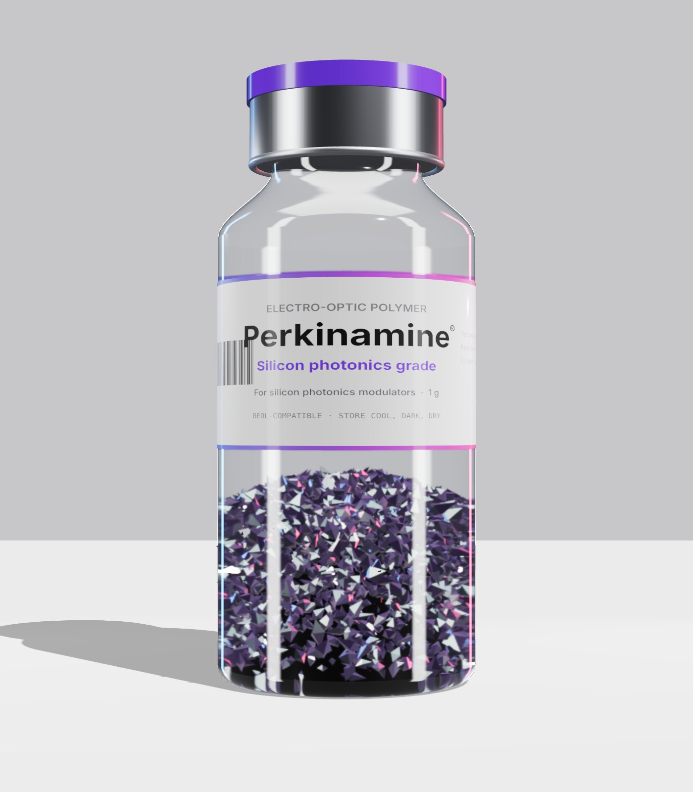
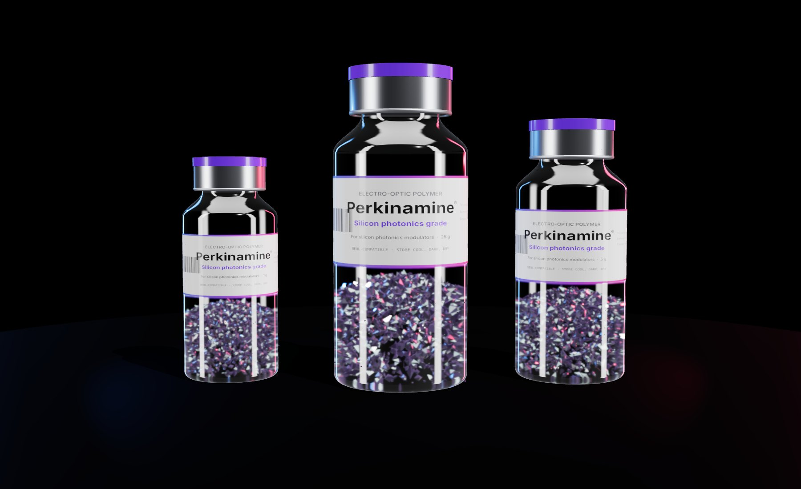
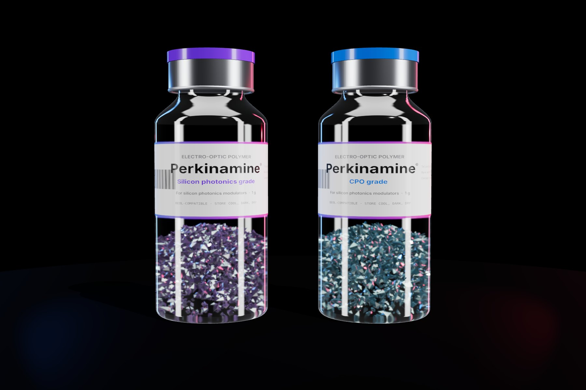
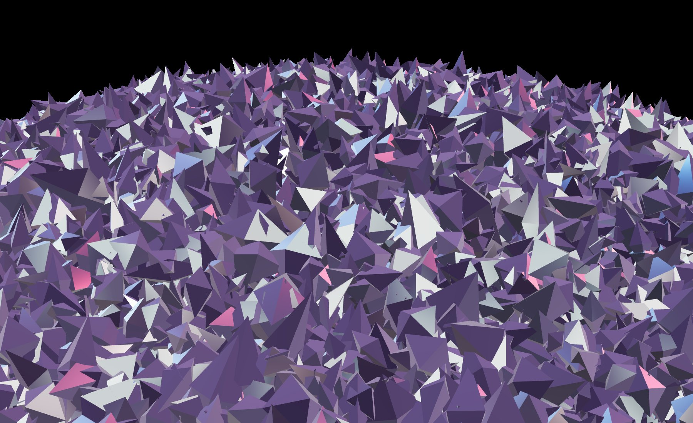
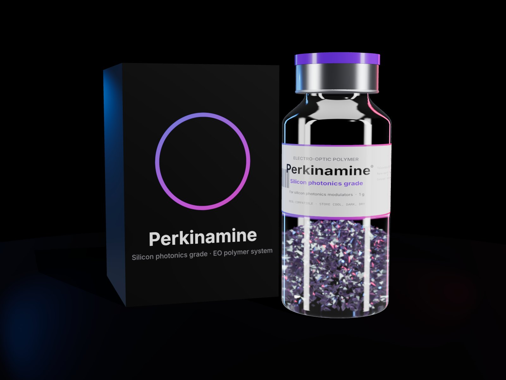
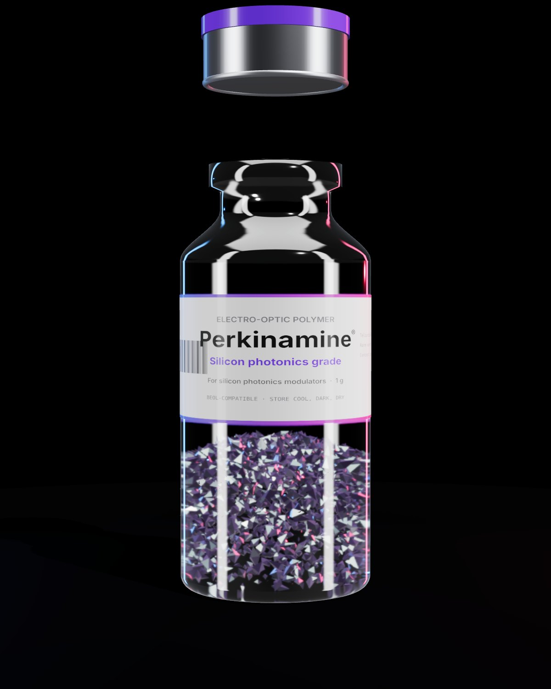
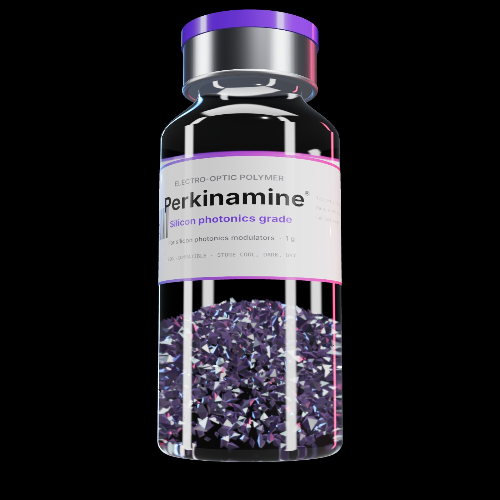
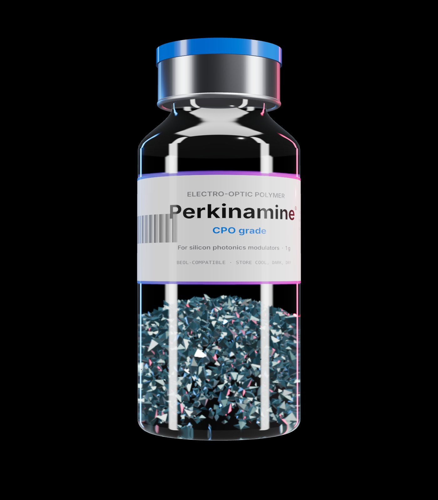

Perkinamine
Light at the speed of AI.
The polymer from Lightwave Logic (NASDAQ: LWLG) built to move AI's data faster, at a fraction of the voltage.
300 mm across. 775 µm thin.
A disc of near-perfect silicon crystal, thinner than a credit card. The notch marks its crystal orientation. A laser ID tracks it through hundreds of process steps.
Printed one field at a time.
A lithography scanner prints a 26 × 33 mm field, steps over, and prints again, about 70 times across the wafer. Test keys in the scribe lanes check every layer lines up to a few nanometres.
One chip. Four lanes of light.
Laser light enters on the left, splits four ways, and each lane runs through an electro-optic modulator under gold electrodes before leaving through grating couplers to the fiber.
Volts in. Light out.
The electrical signal races along the gold electrodes beside the light. The polymer underneath reacts to the voltage and switches the light billions of times a second.
Mind the gap.
Two silicon rails, 220 nm tall, squeeze the light into a slot filled with polymer. Light and voltage share the same tiny space, so a little voltage goes a long way.
Then they line up.
The polymer is packed with chromophore molecules. A strong field "poles" them so they all point the same way, which is what makes the material switch light. Keep scrolling and watch.
This is the IP.
Electrons slosh from the donor end to the acceptor end at the speed of the signal, and that bends light. LWLG designs these molecules in-house as its Perkinamine® family. Shown: a generic chromophore.
Now multiply it.
Every glowing line is an optical link between AI servers, and each one needs modulators. The industry is moving from 800G to 1.6T and 3.2T.
Molecule to AI factory. One company owns the chemistry.
Fortune Global 500 programs in Stage 3.
Stage 3 means a customer is designing Perkinamine into its own chips. None has reached Stage 4 yet. That's the next milestone to watch.
It's in the foundry.
A process design kit lets chip designers drop Perkinamine modulators into standard silicon photonics flows, at foundries like Tower Semiconductor, GlobalFoundries and SilTerra.
Ten million times closer.
Every layer, in one scroll.
Wafer
300 mm silicon
Chip
Four lanes of light
Modulator
Under gold electrodes
The gap
Filled with polymer
Molecule
One chromophore
Which modulator is right for AI?
Illustrative comparison based on company materials. Not a guarantee of results.
Perkinamine polymer
Lightwave Logic
Silicon
Today's default
Thin-film lithium niobate
Crystal alternative
Drag to see the difference.
Silicon on one side, Perkinamine on the other. Slide across to compare.
Illustrative, not to scale. Voltage figure as reported by Lightwave Logic.
Shipping in volume
from 2H 2027.
Company target. Material is available to foundries and design partners today.

Small gap.
Huge leap.
The polymer sits in a gap about the width of a virus. A tiny voltage flips its molecules, and light switches billions of times a second.
The material inside faster AI networks.

An electro-optic polymer for silicon photonics modulators. It turns electrical signals into light, faster and at lower voltage.

Perkinamine®
Silicon photonics grade
Electro-optic polymer for high-speed, low-voltage modulators. Supplied to foundries and design partners, with a process design kit.
Concept render. Sizes are illustrative; Lightwave Logic supplies material to foundries and partners rather than selling publicly.
Three sizes.
One breakthrough.

Which Perkinamine is right for you?
Silicon photonics grade
For pluggable transceivers

CPO grade
For co-packaged optics
CPO grade: custom variant announced Nov 25, 2025, with development planned through the first half of 2026.

Engineered.
Molecule by molecule.
Every batch starts as designed chromophore molecules, made in Colorado and blended into a polymer that switches light with a tiny voltage.
Unboxing the future of optics.

Sealed
for the fab.
Polymers hate oxygen and moisture. Lightwave Logic's encapsulation work helped the material pass the Telcordia 85/85 test in 2025.

Volts in. Light out.
A signal goes in as voltage and comes out as modulated light, billions of times a second.

Tech specs
- Material
- Electro-optic polymer (organic chromophore in a polymer host)
- Device
- Slot and hybrid modulators on silicon photonics
- Speed
- 200 Gb/s per lane demonstrated; 400G CPO targeted
- Drive
- <0.5 V drive level shown (2024)
- Reliability
- Telcordia GR-468 85/85 passed (2025)
- Foundries
- Tower, GlobalFoundries, SilTerra and more
- Supply chain
- Rare-earth free · made in Colorado
- IP
- 67 granted patents · 80+ pending
Figures as reported by Lightwave Logic. Sources on the Thesis and Timeline pages.

Built for
co-packaged optics.
A custom Perkinamine variant for optics packaged right next to AI chips, being co-developed with a second Fortune Global 500 company for 400 Gb/s.
What if they're right?
Every rumour, theory and what-if the LWLG community has floated, mapped as a rainbow of connections. Hover any arc to see the claim and what's actually known.
The stock, right now.
Everything LWLG, in one place.
39 milestones since 1991
Interactive, sourced, linked to every press release.
PatentsThe IP portfolio
52 US patents explained in plain English.
LearnHow a modulator works
A 3-minute scroll explainer.
Earnings callsEvery call, in brief
Searchable summaries and key quotes.
EcosystemPartners & leadership
Foundries, Foxconn, Polariton, QPICs and more.
UnverifiedThe unverified connections
Every rumour and what-if, with sources.
My positionTrack your shares
Value now, and at any price you imagine.
Your name. On a chip.
We'll laser-etch it onto one die of the 3D wafer at the top of this page. It stays on your device; nothing is uploaded.